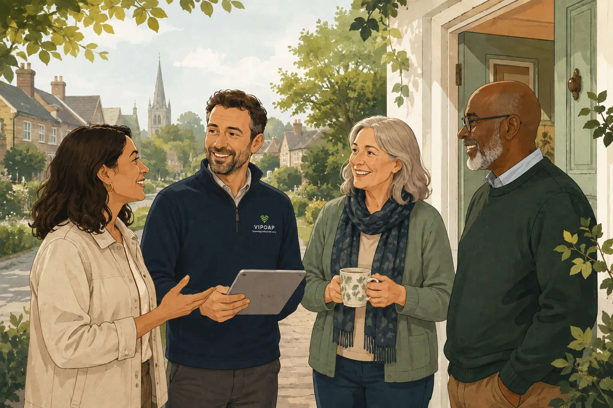

Patient
We work at your pace, with time to ask questions.
VIPOAP was created to make everyday technology feel simpler, safer and less stressful for people in and around Andover.

We will explain things clearly, never make you feel rushed and always recommend what is right for you.
VIPOAP brings together decades of technology experience with a patient, personal approach to helping people understand and enjoy their devices.
We provide friendly local support with Wi-Fi, phones, tablets, printers, televisions and online safety. Many people do not need a repair shop or an anonymous call centre. They need a trustworthy person who will sit beside them, listen and explain things properly.
That is exactly what every VIPOAP visit is designed to provide, wherever the service is delivered.
You do not need to know the technical words. Tell us what is happening and we will work through it together.
VIPOAP Engineer Partners are helpful members of the community who enjoy sharing their knowledge with people who feel less familiar or confident with home technology.
They either work in IT or have strong practical experience with the technology people use every day. Many give some of their time outside their usual work to help people in their local area.
That community approach helps us offer support that feels personal, unhurried and more affordable — with a friendly person who listens before they start fixing.
We match you with an approved local Engineer Partner who can explain things clearly and help you feel comfortable with the next step.
We work at your pace, with time to ask questions.
No jargon and no trying to impress you with technical terms.
No silly questions, no pressure and no unnecessary selling.
You can describe it in your own words.
We explain what we are doing and discuss any cost first.
Before we leave, we check everything works and you are happy.
Friendly home visits are available in Andover and nearby villages.